Nikon · фоторепортаж · 1950–2026
Камеры репортёров видны на тысячах снимков, а о ремнях почти никто не писал. Здесь собрано то, что удалось подтвердить: каталоги Nikon, воспоминания фотографов, музейные экспонаты и архивные фотографии.
Где данные спорные или держатся на воспоминаниях владельцев, это сказано прямо в тексте. Внизу есть шпаргалка по артикулам Nikon, источники и авторы всех фотографий.
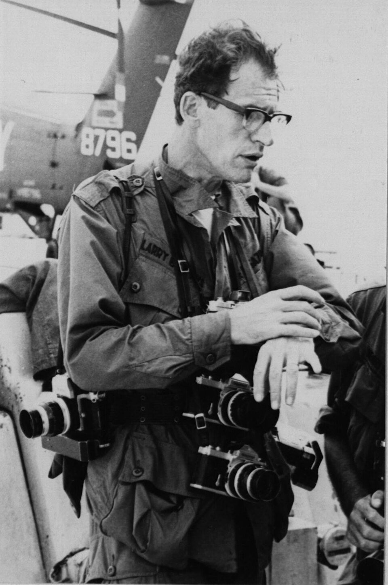
Рейтинг
Критерии: статус среди репортёров, узнаваемость и то, насколько ремень решал рабочую задачу. Порядок — моя оценка.
Чёрно-жёлтый ремень, который не продаётся. Его выдают участникам Nikon Professional Services. Служба выросла из отдела поддержки прессы, который Nikon создала после Олимпиады 1964 года в Токио. В Японии для вступления нужны доход от съёмки, поручитель из членов службы и минимум три профессиональные камеры и пять объективов.
Из-за подделок ремни стали нумеровать. На японских форумах б/у NPS-ремни уходили за 20–30 тысяч иен, а носить такой без членства там считают дурным тоном. На тех же форумах шутят: «кто ходит по городу с NPS-ремнём, тот, скорее всего, не профи».
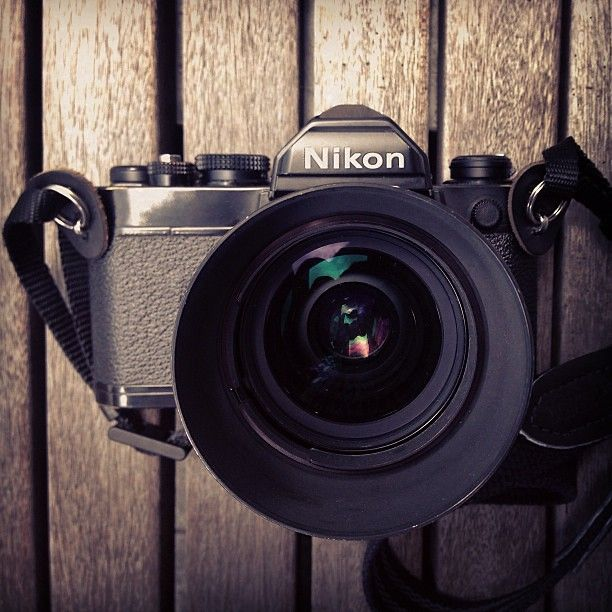
Ремень газетчиков. В 1975 году Philadelphia Inquirer отобрал у фотографов закреплённые машины, и технику стало негде возить. Фотограф и редактор газеты Джим Домке сшил сумку по образцу рыболовной, а один из ветеранов редакции попросил ремень, который не сползает с плеча под весом. Так появился Gripper: в хлопковую ленту вплетены резиновые дорожки. Первые 800 сумок разошлись к лету 1976 года, сейчас марка принадлежит Tiffen.
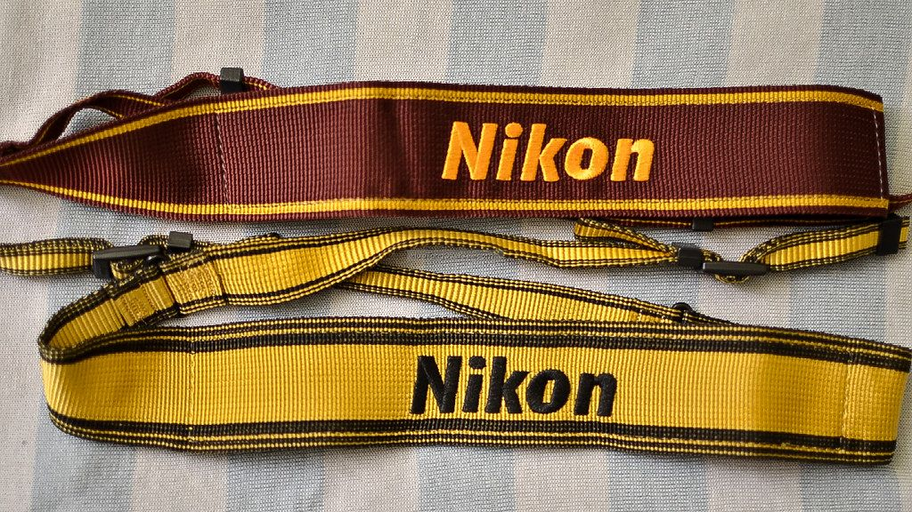
Широкие, около 5 см, ремни 1980-х с крупной надписью Nikon: жёлтый с чёрной окантовкой (AN-6Y) и винно-красный с жёлтой (AN-6W). По воспоминаниям владельцев, они шли со многими камерами того десятилетия, и именно так многие до сих пор представляют себе «ремень Nikon».
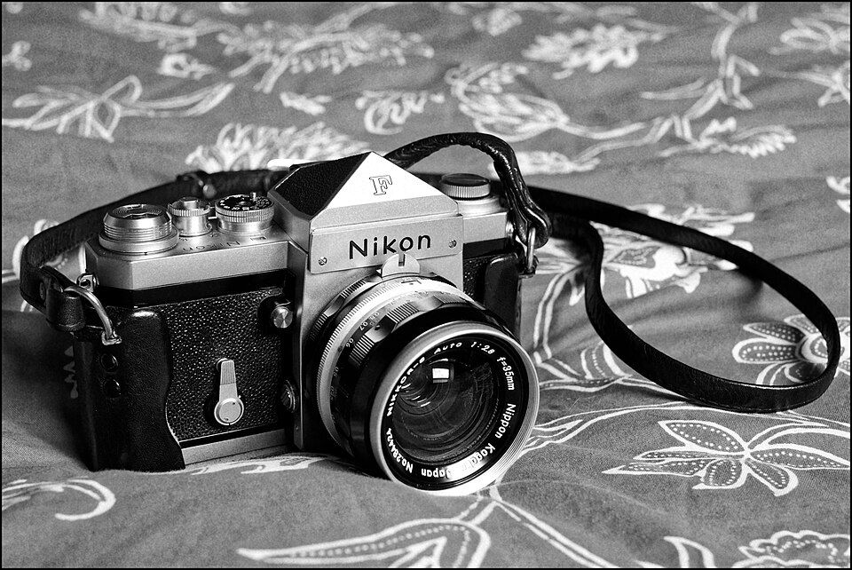
Узкий, около сантиметра, кожаный ремешок с защёлками. Такой AN-1 указан в инструкции 1973 года для F, F2 и Nikkormat, а в каталоге 1978 года рядом с ним есть AN-3 из кожзама. Ремни этой ширины видны и на снимках из Вьетнама: две-три камеры на шее и никакой сумки.
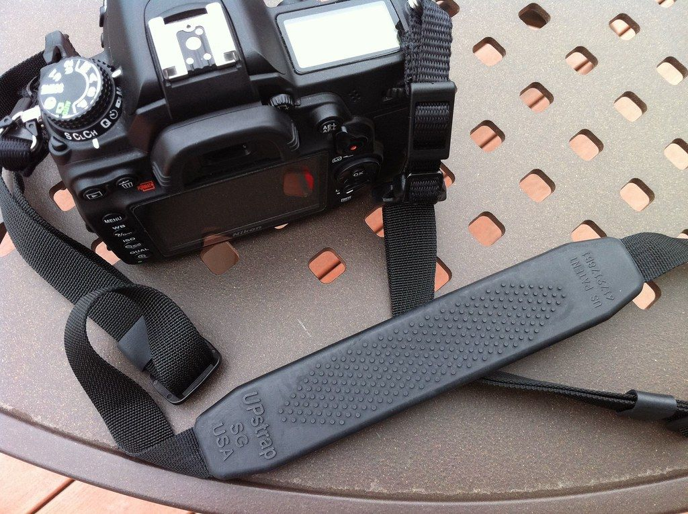
Американский ремень с толстой резиновой подушкой, которая не даёт тяжёлой камере соскользнуть с плеча. Его автор Эл Стегмейер начинал с того, что добавил резиновую накладку к ремню Nikon Professional Services. Обзоры появились в 2003 году, а в 2022-м компания объявила о сворачивании производства. По словам производителя, Джей Мейзел назвал UPstrap лучшим ремнём, каким он пользовался.
Ещё заслуживают места: неопреновый OP/TECH (компания с 1982 года), слинг BlackRapid (2008), быстросъёмный Peak Design Slide (2014) и кожаные кистевые Gordy's (с 2005). Они описаны ниже, в своих эпохах.
1950-е · Nikon S, S2, SP
В июне 1950 года токийский фотограф Дзюн Мики снял Дэвида Дугласа Дункана из LIFE объективом Nikkor 85 мм. Резкость отпечатка удивила Дункана, и вместе с фотографом Хорасом Бристолом он поехал на завод Nippon Kogaku за объективами. В Корее Дункан снимал на две Leica IIIc: одну с Nikkor 50 мм f/1.5, другую с Nikkor 135 мм f/3.5. На Nikkor перешли и его коллеги по LIFE Карл Майданс и Хэнк Уокер. Первым «репортажным Nikon» стали объективы на чужих камерах.
Про ремни этой эпохи источники молчат. Дальномеры Nikon S, S2 и SP продавались в кожаных футлярах «всегда наготове»: нижняя половина прикручивалась к штативному гнезду, ремень крепился к футляру. Дункан, по воспоминаниям, брал минимум техники, а плёнку рассовывал по карманам. В 1965 году Nikon подарила ему 200-тысячный Nikon F в благодарность за то, что он прославил марку.
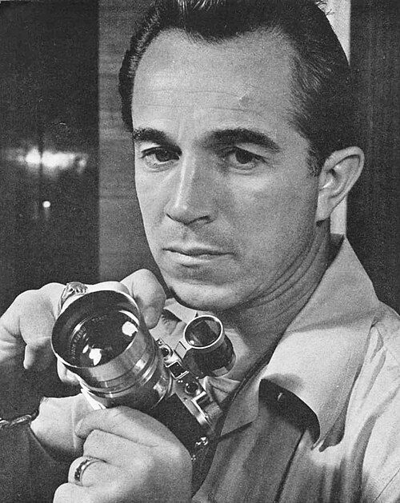
1959–1975 · Nikon F
«Большинство из нас снимали на Nikon, а Савада был лейковцем».
Дирк Холстед о Кёити Саваде
Nikon F стал рабочей камерой этой войны, и репортёры носили по две-три камеры сразу. Тим Пейдж описывал свой набор так: две Leica с 35 и 21 мм и Nikon F со 105 и 200 мм, а в сезон дождей ещё и подводный Nikonos.
Заводской ремень был узким. У одной из камер Nikon в Смитсоновском музее американской истории сохранился ремень 99 × 1 см. По воспоминаниям владельцев, ремни к F были кожаными, чёрными или бордовыми. В 1970-х в каталоге Nikon были кожаный AN-1 и AN-3 из кожзама, оба с защёлками.
Сумок в бою, по воспоминаниям участников, не носили: «ничего, за что можно зацепиться». Блестящий хром, как вспоминает один ветеран, заклеивали чёрной или зелёной изолентой. Катрин Леруа привязывала свою Leica к шее шнурком от ботинка, а в боевой прыжок с парашютом в 1967 году взяла две камеры на шее. Дики Шапель, погибшая во Вьетнаме в 1965 году, прыгала со специальным подсумком для камер.
Самый известный Nikon F войны принадлежит Дону Маккаллину. В 1970 году в камбоджийской провинции Прейвенг камера остановила пулю АК-47. У левого ушка видны остатки ремня.
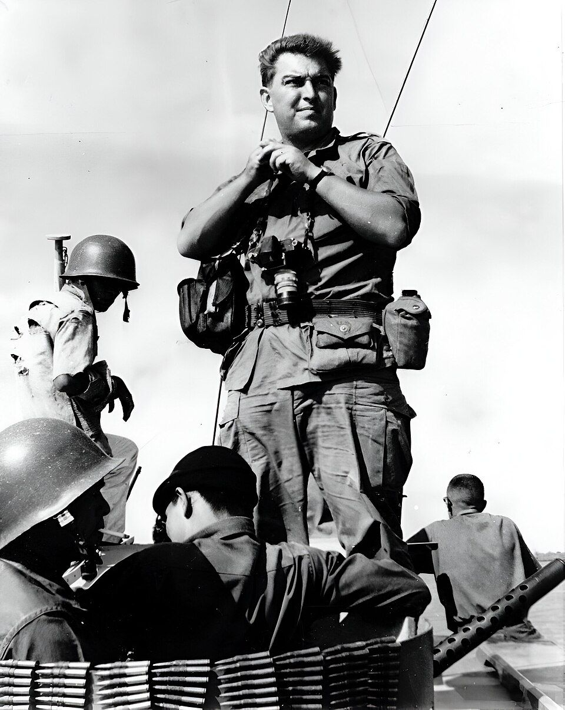
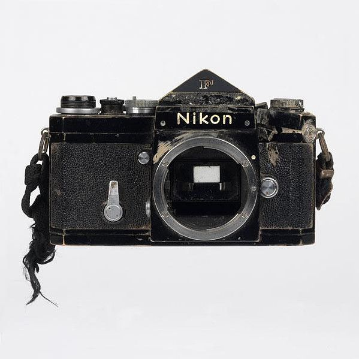
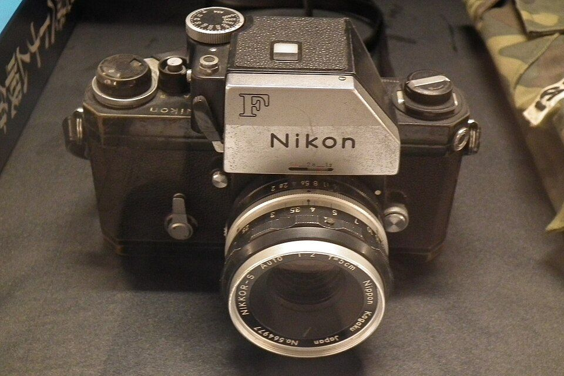
1971–1980 · Nikon F2
Первые F2 ещё шли с узкой кожей: владелец F2AS 1977 года вспоминает ремешок шириной около 1,3 см. В каталоге аксессуаров Nippon Kogaku 1978 года появляются нейлоновые AN-4B (полностью чёрный) и AN-4Y (чёрный с жёлтыми полосами). Оба тканые: широкие посередине и узкие у креплений.
Репортажная классика тех лет — F2 с мотором MD-2 и кистевым ремнём AH-1 на площадке. Такую связку держат одной рукой, как рукоятку. В 1975–1976 годах в Филадельфии появились сумки Domke и ремень Gripper, о них выше, в рейтинге.
Nikon F2 турецкого журналиста Эргина Конуксевера, снимавшего военную операцию на Кипре в 1974 году, хранится в Военном музее Харбие в Стамбуле вместе с потёртым тканевым ремнём и кожаным тубусом для объектива.
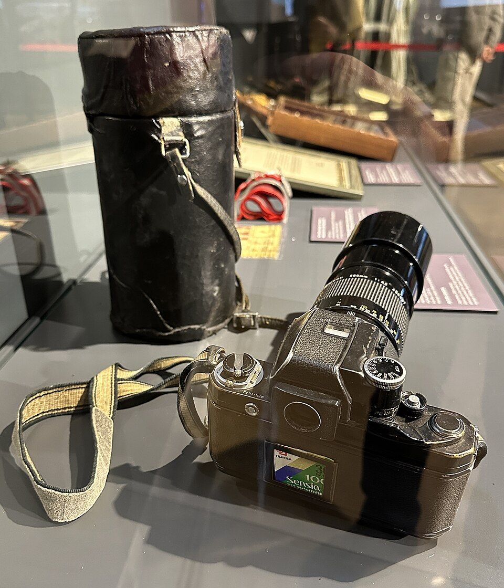
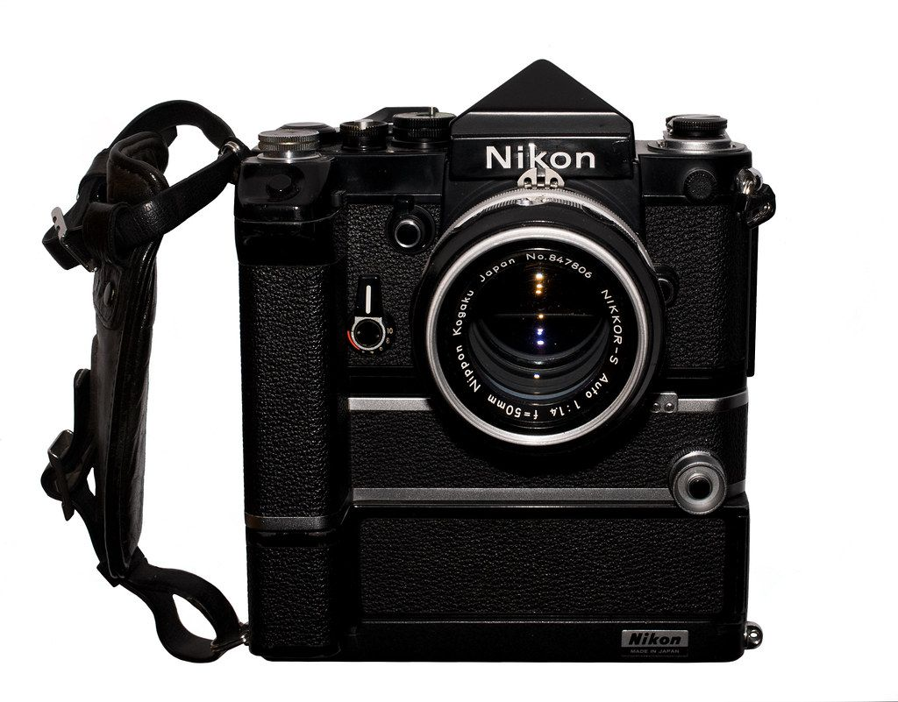
1980–1988 · F3, FM2, FE2
В 1980-е «лицом» ремня Nikon стали широкие AN-6Y и AN-6W. Какой ремень лежал в коробке с F3, владельцы спорят до сих пор: кто-то получил камеру без ремня, кто-то с бордовым нейлоновым. Один из участников форума Photrio подытоживает: «AN-4B и AN-6Y шли с кучей Nikon 80-х».
Стив Маккарри снял «Афганскую девочку» (1984) на FM2 с Nikkor 105 мм f/2.5 на Kodachrome 64. В 1982 году в Джексон-Хоуле (Вайоминг) появилась OP/TECH USA; позже она прославилась неопреновыми ремнями, которые пружинят и снимают вес с шеи. Свой Fashion Strap компания называет первым неопреновым ремнём для камеры.
Примерно тогда же, по воспоминаниям японских фотографов, появился первый ремень NPS, жёлтый.
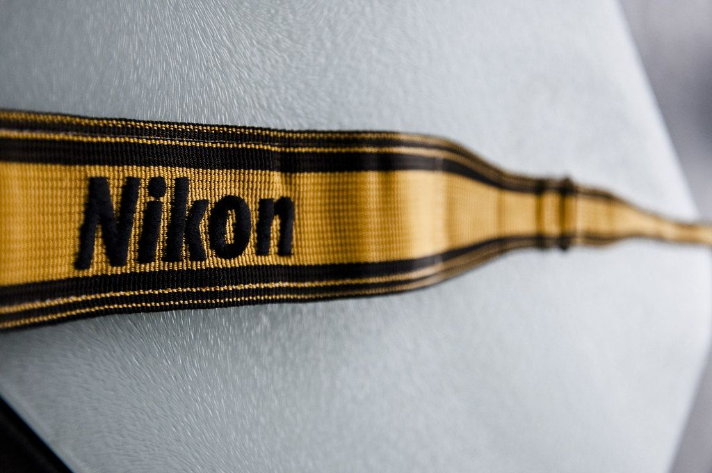
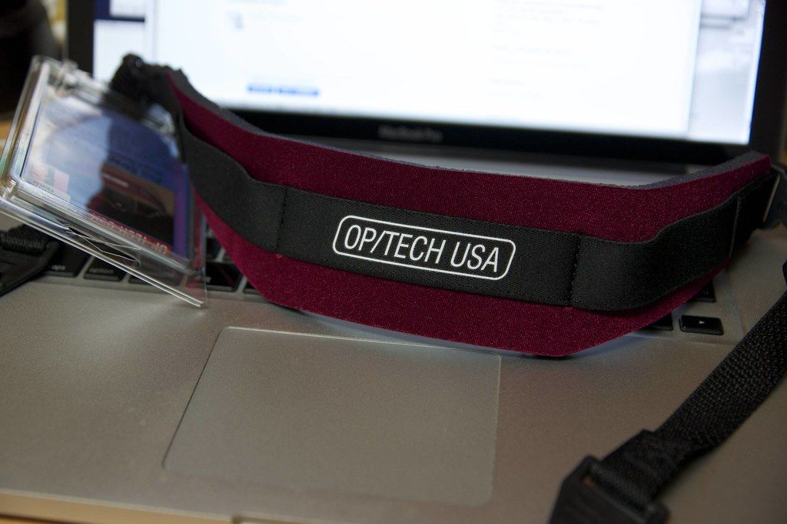
1988–2006 · F4, F5, F6 и NPS
К F5 (1996) прилагался AN-14: бордовый ремень шириной около 2,5 см с жёлтым логотипом. К F6 (2004) шёл AN-19, чёрный с жёлтой надписью «Nikon F6». Какой ремень лежал в коробке F4, подтвердить не удалось: магазины продают AN-6Y и AN-6W с гравированными пряжками как «родные для F4», но документов нет.
NPS — служба Nikon для профессионалов: срочный ремонт, подменная техника, поддержка на Олимпиадах. К Играм 1980 года в Лейк-Плэсиде она уже работала под этим именем. В США условия мягче японских: две профессиональные камеры и два объектива, базовый уровень бесплатный.
Дизайн ремня менялся вместе с камерами. По воспоминаниям японских фотографов: в начале 80-х он был жёлтым, около 1988–1990 годов чёрным, у F5 и F100 с жёлтым логотипом, у цифровых D1 синим, у D2X и D3 чёрно-серебристым, в эпоху Z9 с жёлтой полосой. Воспоминания расходятся в деталях. Надпись «NPS | NIKON PROFESSIONAL SERVICES» зарегистрирована как торговая марка в 2015 году. В США был и свой вариант: чёрная лента шириной 2,5 см с белой надписью, сделанная Domke.
UPstrap вырос прямо из NPS-ремня: Эл Стегмейер добавил к нему резиновую подушку, и к 2003 году ремень уже продавался.
2007–2026 · D3, D4, D5, D6, Z9
Штатные ремни цифровых флагманов почти не менялись: чёрная лента шириной около 4,5 см с жёлтым названием модели или жёлтой строчкой. D3 комплектовался AN-D3, D4 — AN-DC7, D5 — AN-DC15, D6 — AN-DC22, Z9 — AN-DC24 с надписью «Nikon Z».
Одновременно ремень перестал быть обязательно шейным. BlackRapid (2008, свадебный фотограф Рон Генри из Сиэтла) повесил камеру на слинг через плечо. HoldFast (2011, Мэттью Свэггарт) сделал кожаную двойную «сбрую» MoneyMaker. Peak Design (основана в 2010-м, ремень Slide вышел в 2014-м) придумала быстросъёмные крепления на ушки.
В опасных местах многие снимают фирменные ремни. Руководство по безопасности Комитета защиты журналистов (CPJ) советует носить технику в неприметных сумках, а Кен Роквелл писал, что ремень с надписью NIKON или CANON выделяет вас в толпе для воров. Алекс Кюни снимал в Мосуле на D5 и D810/D850 с двойной разгрузкой OP/TECH Double Sling.
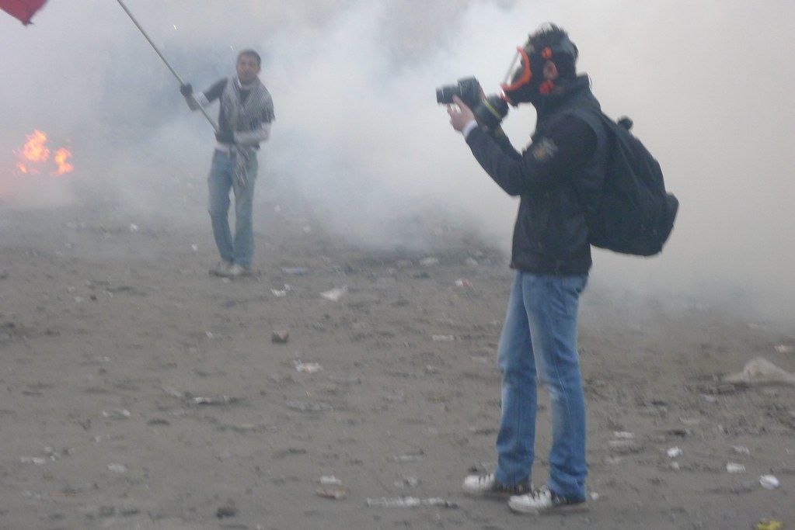
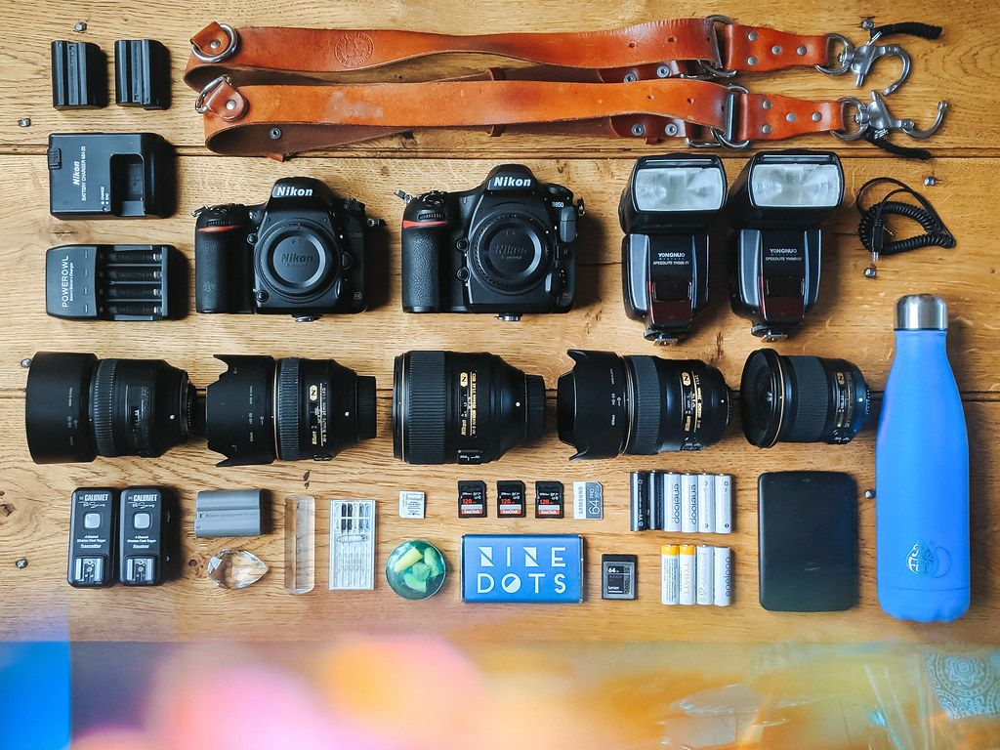
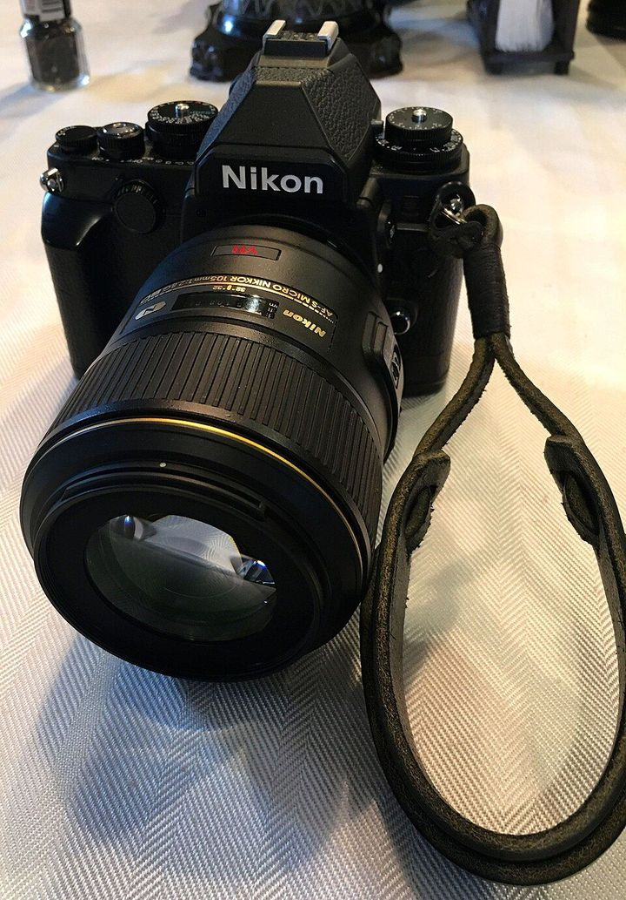
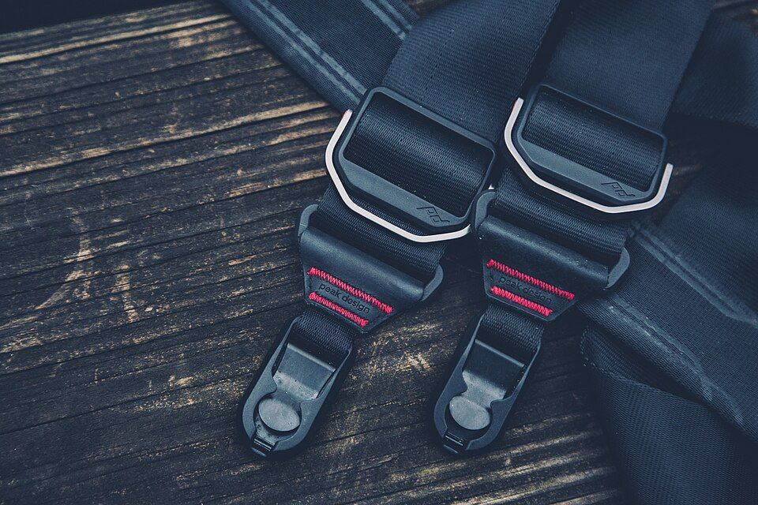
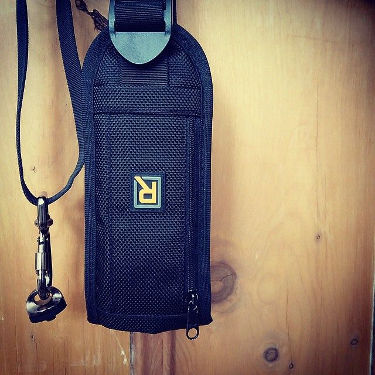
Шпаргалка
| Модель | Цвет | Камера или год | Как выглядит |
|---|---|---|---|
| AN-1 | F, F2, Nikkormat; инструкция 1973 г. | Узкая кожа, защёлки | |
| AN-3 | Каталог 1978 г. | Кожзам, защёлки | |
| AN-4B | Каталог 1978 г., многие камеры 80-х | Чёрный тканый нейлон, шире посередине | |
| AN-4Y | Каталог 1978 г. | Чёрный с жёлтыми полосами; поздние версии ярко-жёлтые | |
| AN-6Y | 1980-е | Широкий, жёлтый с чёрной окантовкой, логотип Nikon | |
| AN-6W | 1980-е | Широкий, винно-красный с жёлтым логотипом | |
| AN-14 | F5, 1996 | Бордовый, ≈ 2,5 см, жёлтый логотип | |
| AN-19 | F6, 2004 | Чёрный, жёлтая надпись «Nikon F6» | |
| AN-D3 | D3, 2007 | Чёрный, ≈ 4,5 см, жёлтая строчка | |
| AN-DC7 | D4, 2012 | Чёрный, жёлтая надпись «Nikon D4» | |
| AN-DC15 | D5, 2016 | Чёрный, жёлтая надпись «Nikon D5» | |
| AN-DC22 | D6, 2020 | Чёрный, ≈ 4,5 см, жёлтая строчка | |
| AN-DC24 | Z9, 2021 | Чёрный, жёлтая надпись «Nikon Z» | |
| NPS | Только членам NPS | Чёрно-жёлтый, дизайн менялся с поколениями камер |
AN-DC1 к профессиональным не относится: он шёл с любительскими D40–D90 и D7000. Модель, шедшая с Nikon F в 1959 году, и ремень из коробки F4 по документам не подтверждены.
Практика
Проверка
Все фотографии на странице взяты под свободными лицензиями или из общественного достояния; автор и лицензия указаны в подписи к каждой. Страница собрана 30 сентября 2026 года. Это неофициальная фан-страница, с компанией Nikon она не связана.

.jpg){kind=link}


.jpg){kind=link}
.jpg){kind=link}